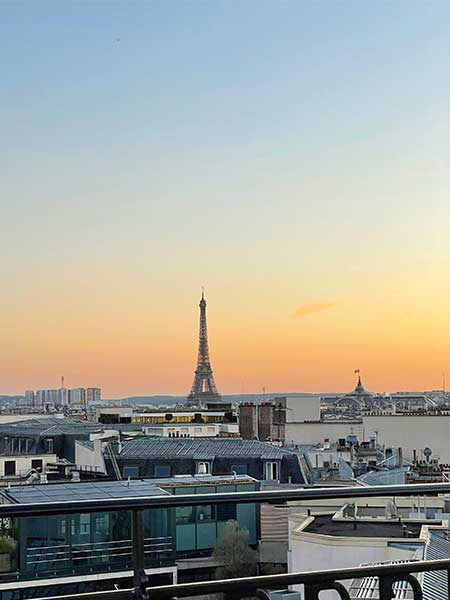
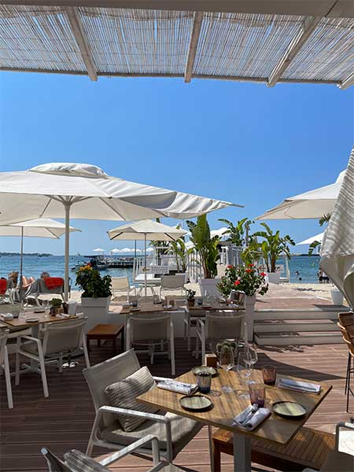
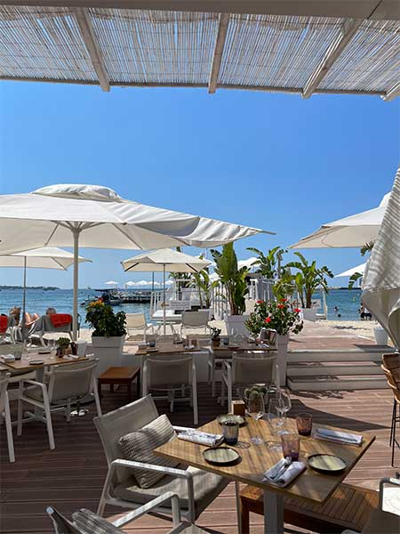
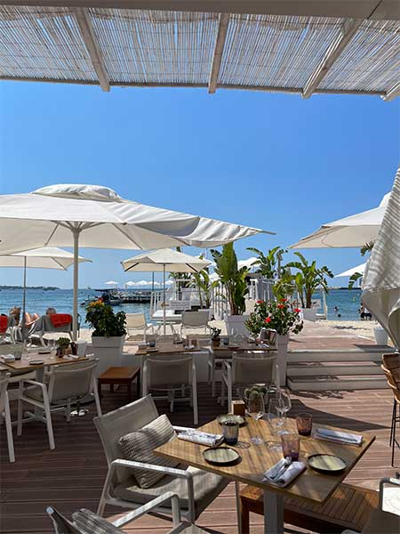

We noticed the biggest cultural differences from the United States in Florence compared to London and France. France and Florence’s cultures were more similar to each other’s than I had realized. For example, people in Europe do not drink water. This was a terrible shock for me also because it was 100º every day.

In France I visited the eiffel tower with my parents. It was a gorgeous day and I had spent the morning learning how to make macarons! My parents and I were lucky enough to attend a private session with a professional chef. Above are photos of the eiffel tower visit along with the finished macaron plate. Dessert for breakfast!

After three days in Paris, my family and I headed to Cannes for the week! This was an incredibly gorgeous city with incredible views of the French Riveria. We spent our days lounging by the water in the sun and our evenings out to dinners in the hotel or in town. I loved going into town to immerse myself in authentic French culture. We also took a day trip to Monte Carlo where we visited the casino. My dad was very excited to drive on Circuit de Monaco as well. After Monte Carlo, we pit-stopped in the mideivel city, Eze. We climbed up to the top of the castle and had the most gorgeous view of the water! I have never seen so much blue in one photo.
A Day in Chianti, Italy
My favorite thing about Italian culture was the food and dining experience. It is so different from America. The dining experience in Italy is extremely relaxing and it is completely normal to stay at a table for hours. When we compared these experiences to prior ones from the United States, we were very shocked. In America, I have found that dining can feel a bit rushed and when the restaurant that you are at is busy, you almost feel stressed for the waiters and chefs.
Regan and I were lucky enough to go on a private wine tour in Chianti with her siblings and close friends. It was such a fun experience to share with them. Chianti wine is a special type of wine produced exclusively in the Chianti version of Tuscany.
Mid-day, we stopped at a local restaurant for lunch and ate on a balcony overlooking the hills of Tuscany. It was beautiful and the food was so fresh!
London
After 3 weeks in Florence, I was ready for a change of pace and scenery. London offered just that! I tell close friends and family that London is like New York City but without all of the bad parts. It was so clean, everyone was very well-mannered, and having the tube for public transporation after walking and taxing so much in Florence was refreshing. It was also nice having a bit more variety in eating options. I loved how fast-paced and culturally diverse it was.
I loved everything about London and would move there in a heart beat. We were lucky enough to be in a beautiful area, South Kensington, a royal district! This was comforting because we felt safe in an unfamiliar city. When we were not in class, we were exploring all that London had to offer. We walked through Camden Market, the West End, Shoreditch, and Oxford Street.
 In France I visited the eiffel tower with my parents. It was a gorgeous day and I had spent the morning learning how to make macarons! My parents and I were lucky enough to attend a private session with a professional chef. Above are photos of the eiffel tower visit along with the finished macaron plate. Dessert for breakfast!
In France I visited the eiffel tower with my parents. It was a gorgeous day and I had spent the morning learning how to make macarons! My parents and I were lucky enough to attend a private session with a professional chef. Above are photos of the eiffel tower visit along with the finished macaron plate. Dessert for breakfast! 
After three days in Paris, my family and I headed to Cannes for the week! This was an incredibly gorgeous city with incredible views of the French Riveria. We spent our days lounging by the water in the sun and our evenings out to dinners in the hotel or in town. I loved going into town to immerse myself in authentic French culture. We also took a day trip to Monte Carlo where we visited the casino. My dad was very excited to drive on Circuit de Monaco as well. After Monte Carlo, we pit-stopped in the mideivel city, Eze. We climbed up to the top of the castle and had the most gorgeous view of the water! I have never seen so much blue in one photo.

After three days in Paris, my family and I headed to Cannes for the week! This was an incredibly gorgeous city with incredible views of the French Riveria. We spent our days lounging by the water in the sun and our evenings out to dinners in the hotel or in town. I loved going into town to immerse myself in authentic French culture. We also took a day trip to Monte Carlo where we visited the casino. My dad was very excited to drive on Circuit de Monaco as well. After Monte Carlo, we pit-stopped in the mideivel city, Eze. We climbed up to the top of the castle and had the most gorgeous view of the water! I have never seen so much blue in one photo. My favorite thing about Italian culture was the food and dining experience. It is so different from America. The dining experience in Italy is extremely relaxing and it is completely normal to stay at a table for hours. When we compared these experiences to prior ones from the United States, we were very shocked. In America, I have found that dining can feel a bit rushed and when the restaurant that you are at is busy, you almost feel stressed for the waiters and chefs.
My favorite thing about Italian culture was the food and dining experience. It is so different from America. The dining experience in Italy is extremely relaxing and it is completely normal to stay at a table for hours. When we compared these experiences to prior ones from the United States, we were very shocked. In America, I have found that dining can feel a bit rushed and when the restaurant that you are at is busy, you almost feel stressed for the waiters and chefs.  Regan and I were lucky enough to go on a private wine tour in Chianti with her siblings and close friends. It was such a fun experience to share with them. Chianti wine is a special type of wine produced exclusively in the Chianti version of Tuscany.
Regan and I were lucky enough to go on a private wine tour in Chianti with her siblings and close friends. It was such a fun experience to share with them. Chianti wine is a special type of wine produced exclusively in the Chianti version of Tuscany. 
 After 3 weeks in Florence, I was ready for a change of pace and scenery. London offered just that! I tell close friends and family that London is like New York City but without all of the bad parts. It was so clean, everyone was very well-mannered, and having the tube for public transporation after walking and taxing so much in Florence was refreshing. It was also nice having a bit more variety in eating options. I loved how fast-paced and culturally diverse it was.
After 3 weeks in Florence, I was ready for a change of pace and scenery. London offered just that! I tell close friends and family that London is like New York City but without all of the bad parts. It was so clean, everyone was very well-mannered, and having the tube for public transporation after walking and taxing so much in Florence was refreshing. It was also nice having a bit more variety in eating options. I loved how fast-paced and culturally diverse it was.  I loved everything about London and would move there in a heart beat. We were lucky enough to be in a beautiful area, South Kensington, a royal district! This was comforting because we felt safe in an unfamiliar city. When we were not in class, we were exploring all that London had to offer. We walked through Camden Market, the West End, Shoreditch, and Oxford Street.
I loved everything about London and would move there in a heart beat. We were lucky enough to be in a beautiful area, South Kensington, a royal district! This was comforting because we felt safe in an unfamiliar city. When we were not in class, we were exploring all that London had to offer. We walked through Camden Market, the West End, Shoreditch, and Oxford Street.